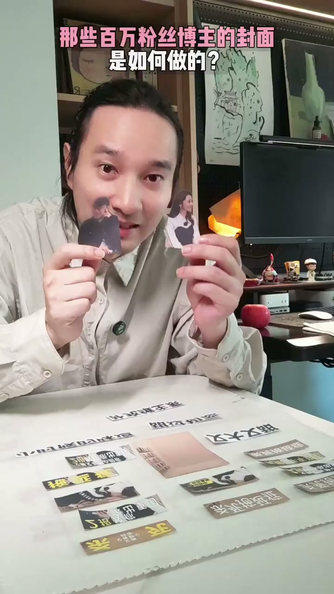
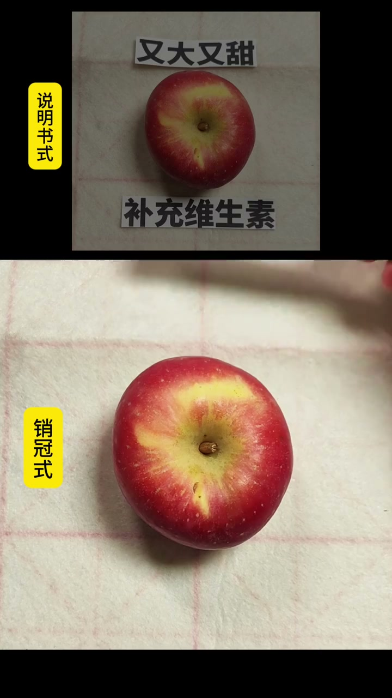

内容要点
这段视频围绕「那些百万粉的博主小红书封面是怎么做的」展开，按时间介绍其中的关键环节。你看人物放左右文字上下排。
拍摄与画面处理
你看人物放左右文字上下排。经典的上中下构图撕板。标题撕个脚。换个标签。压脚构图有冲击力。字太粗不高级。换个受高的字体。错位排版。有动感了吧。太乱了

进阶设置与优化
各位小组接著点赞。走开让本宫来。加图把背景跟人物都加上来。点击构图。调整下位置大小。加字。选一个免费的字体。非同引白色字。日于人物后面。复制一个改校文案
剪辑与呈现处理
八年我试记了一千多张海报才发现。封面存在的目的就是吸引人。等一下这同样的选题设计。六千赞和四万差距为啥这么大。我们来做个实验。需求是卖出这个苹果。为了产品。我们会说它又大又甜。可以补充维生素。为了感觉

总结
八年我试记了一千多张海报才发现。